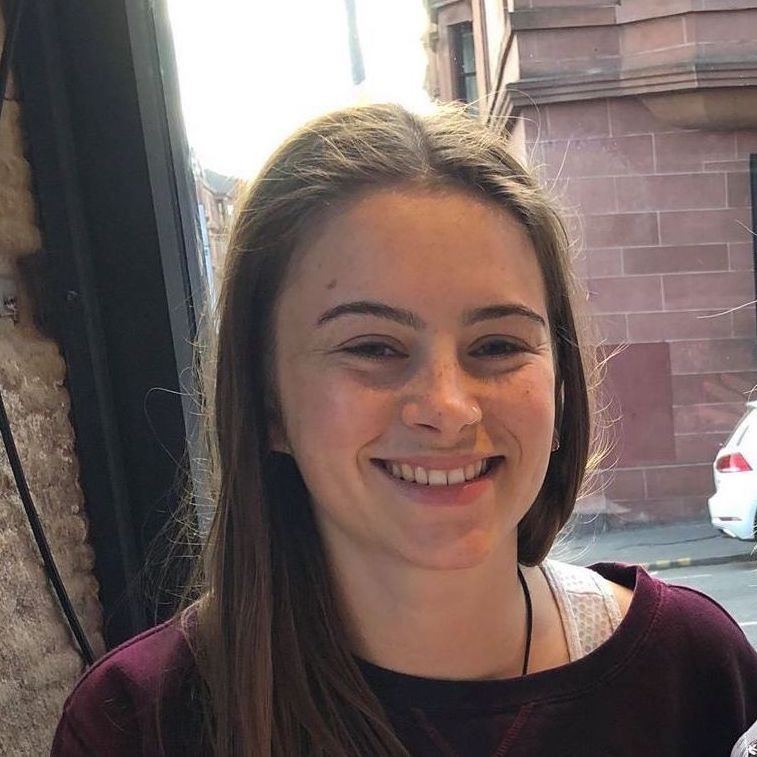

EMILY SAVVA
Self-taught web developer and University of Sussex graduate.
Hard-working and organised self taught web developer who has designed and built websites
through evening classes and online tutorials. Recently returned from working as an
English Language Assistant in Bilbao, Spain after graduating. Experience working as a
Research Assistant at the University of Sussex and internships in the head office of an NGO
in Vietnam and in Caroline Lucas’ constituency office.
Experience
English Language Assisstant at EOI Barakaldo, Bilbao, Spain
(Oct 19-May 20)
Planned and conducted lessons for up to 30 adult students with a range of levels of English.
Coordinated with many different teachers, adapting lesson plans based on the needs of the students.
Intern at Caroline Lucas Consituency Office, Brighton
(Feb 19-May 19)
Conducted qualitative research on the accessibility of private renting to those receiving
housing benefits.
Developed computer literacy by answering emails and writing reports.
Researched and conducted briefings for Caroline on upcoming meetings and events.
Witnessed complex policy issues and commercial challenges first hand.
Research Assistant at University of Sussex, Brighton
(Summer 18)
Attained research skills and attention to detail by sorting through thousands of photos
taken by the North Korean press and coding them into a excel document.
Worked independently and efficiently, finishing the project well-ahead of time.
Intern at Centre for Education and Development, Hanoi, Vietnam
(Oct 15)
CED is an NGO which conducts research and implements programs in education to
develop Vietnams education system, which is considerably behind other East Asian
nations.
Tasks included distributing soft-skills survey to young people, proofreading reports
written by local staff and writing reports.
Developed communications and cultural awareness by assisting local staff in written and
spoken English.
Education
Self-taught Web Development
(Jan 19-present)
Attended Code First: Girls evening classes, where I built a website with a partner using HTML, CSS, JavaScript and Github collaboration.
Attended Code Bar evenings where I worked through online tutorials with other people new to web development.
Currently building on previous knowledge by working through Codecademy online Web Development course.
BA(Hons) Politics at Univeristy of Sussex
(Sep 16-Sep 19)
Attained 2:1 (65%) with key modules including:
- Research Skills and Methods
- Comparative Public Policy
- Politics of governance: The European Union
- Beginner's Spainsh
Transferable skills obtained include problem solving, excellent presentation skills and project managment.
Beaulieu Convent School
(Sep 03-Jul 15)
A-Levels: Mathematics (B), Geography (B), English Literature (C)
GCSEs: English Language (A*), English Literature (A), Mathematic s (A), Core Science (A), Additional Science (A), Geography (A), Religious Studies (A), Business Studies (A), French (B), Music (B).